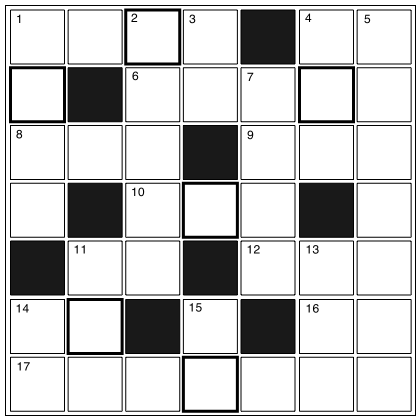

クロスワード
【→ PDF（印刷用）】

- タテのカギ
-
- １. 『複数』の反対は？。
- ２. 同じことを何度もすること。
- ３. 『梅雨』は何と読む？
- ４. 塀や垣根など、周囲に置くもののこと。
- ５. 電車やバスや飛行機などがある。
- ７. 歌を歌うときの声。
- 11. 足りない部分を助けること。
- 13. 日本の伝統的な演劇。
- 14. テーブルや机を支えている部分のこと。
- 15. 傷ができること。転んで腕に○○をする。
- ヨコのカギ
-
- １. やることがなくて暇なこと。
- ４. 『未来』の反対は？
- ６. はやること。
- ８. 夏に食べる大きな果物。海で○○○割りをする。
- ９. 腰から足までをぴったりと覆う服。
- 10. イギリス人やフィリピン人の話す言葉。
- 11. 夜空に○○が輝いている。
- 12. 画家のこと。
- 14. この料理は○○が良い。
- 16. 『部下』は何と読む？
- 17. 優秀だが貧しい学生に与えられる金銭。
【→ 解答を見る】